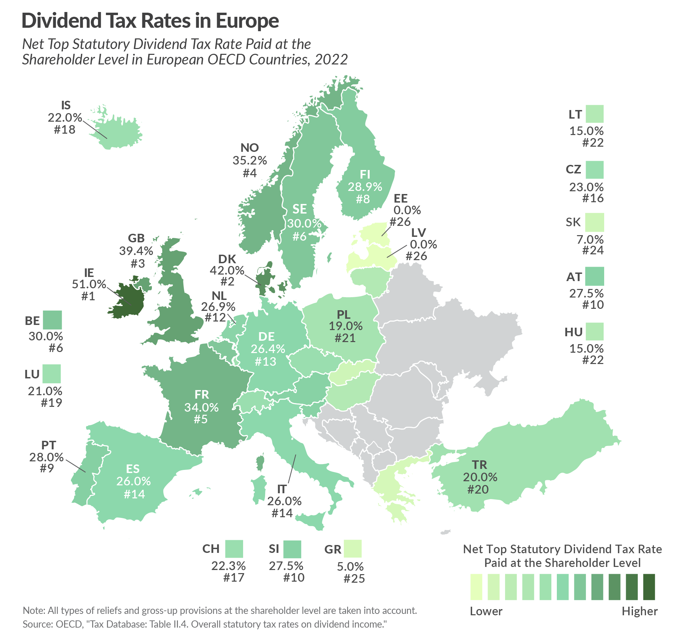
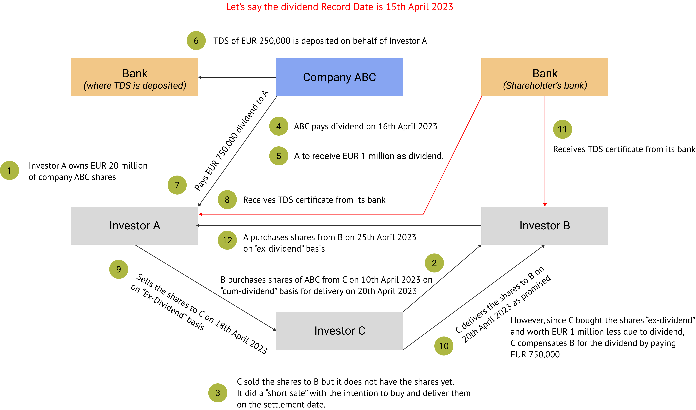
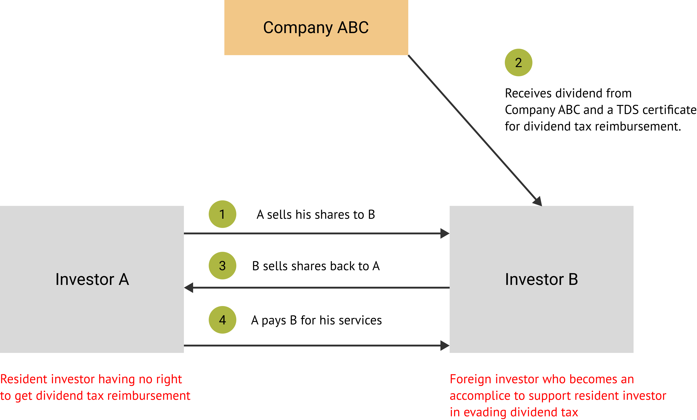

Dividend Arbitrage Strategy or Fraud
French regulators are investigating banks and other financial institutions as a part of a probe into tax fraud and money laundering related to dividend payments. In 2022, they even conducted raids.
Global banks such as Societe Generale, BNP Paribas, HSBC, Natixis, Deutsche Bank and J.P. Morgan are a part of this investigation and could face collective fines of up to EUR 1 billion, if found guilty.
The investigations relate to dividend arbitrage strategies known as "Cum-Cum" and "Cum-Ex", which are designed to evade dividend tax. Similar techniques have been used in other European countries such as Germany, the UK, Belgium, and Denmark.
We explore these strategies, in this article.
Preface
In most European countries, dividend tax (dividend distribution tax) is levied on dividends received from stocks. The company paying dividend is required to deduct tax and deposit it with the government - tax deducted at source or TDS. Against this TDS, a TDS Certificate is issued to the investor that can be used to claim tax refund, if eligible.
Dividend tax varies from country to country. The chart below shows dividend tax in some European countries.

For some HNI clients, the dividend income is significant, and to save tax, many seek tax consultancy services. Tax firms, legal firms, banks, and other financial institutions are involved in provision of these services. Over the years, some of these institutions have resorted to deploying strategies for their clients which are specifically designed to reduce the dividend tax burden. Two of such strategies are Cum-Cum and Cum-Ex Dividend Arbitrage Strategy.
Cum-Ex Dividend Arbitrage Strategy
This strategy had been widely adopted in Germany prior to 2012 to take take advantage of a flaw in their TDS certificate issuance process.
TDS Certificates are issued by shareholders' banks to investors. The banks did not have a proper procedure in place to identify real investors owing to which many times, TDS certificates were issued to multiple investors.
Investors, aided by tax evasion experts, entered round-tripping transactions with other investors whose purpose was to claim multiple (generally two) TDS certificates and thereby claim tax exemption. The underlying idea is that an original investor short sells shares to another investor (accomplice) before dividend record date for delivery of shares after record date. On the record date, the original investor's name is still in the books of the company and hence receives dividend. Basis this, it claims TDS certificate from its bank and subsequently files for tax exemption. It then delivers shares, after record date, to the accomplice to whom it had sold short. Since the value of delivered shares is less than the original transaction, the dividend amount is passed on to the accomplice as compensation. The accomplice then claims a TDS certificate from its bank by showing proof that it purchased the shares before the record date. The extra dividend tax exemption claim is shared by the original investor and the accomplice. The shares are later sold back by the accomplice to the original investor to complete the round tripping.
The government received only one deposit of TDS, but it has now issued two TDS certificates. This strategy is commonly deployed by involving three parties instead of two. The diagram below shows how this strategy works.

Cum-Cum Dividend Arbitrage Strategy
In some European countries, non-residents (foreign investors) are allowed to invest in stocks. Dividend tax is either not applicable to such foreign investors or is refunded, while the same benefits are not available to resident investors (resident shareholders) Resident shareholders could transfer their stocks for a short period of time to foreign investors to avoid dividend tax. Foreign investors held the shares during the period when dividends were paid out. Later, they sold the stocks back to the resident investors and the dividend amount is passed back. The dividend tax exemption amount was split between the parties.
The diagram below shows this strategy.
